Welcome to Dispatch-Bifrost CI pages
Here are the results from the last run associated with Dispatch-Bifrost pic_harris_sheet, build #17
Brio & Wu results
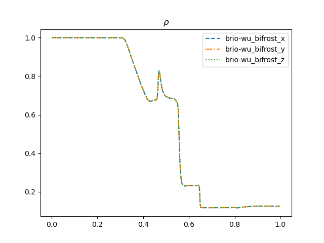 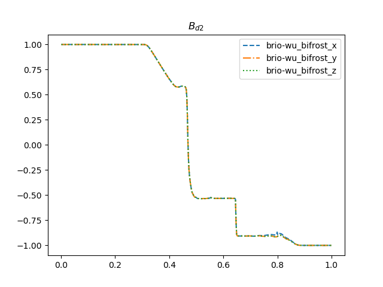 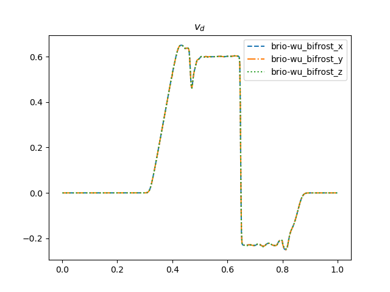
Sod shock tube comparison to analytical results
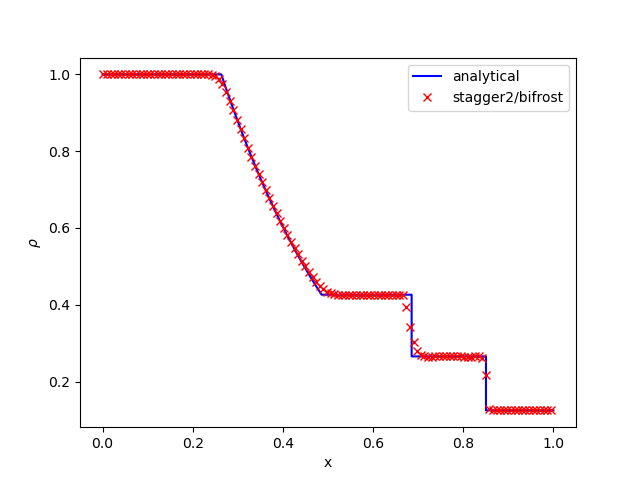 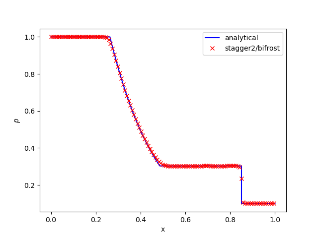 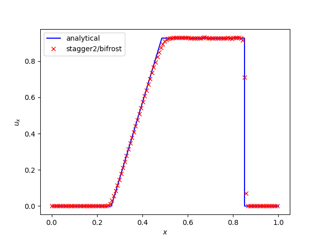
Advection of a Magnetic Field Loop
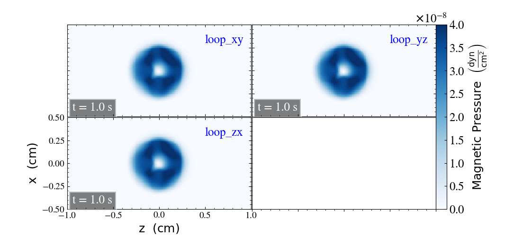
Orszag Tang energy conservation
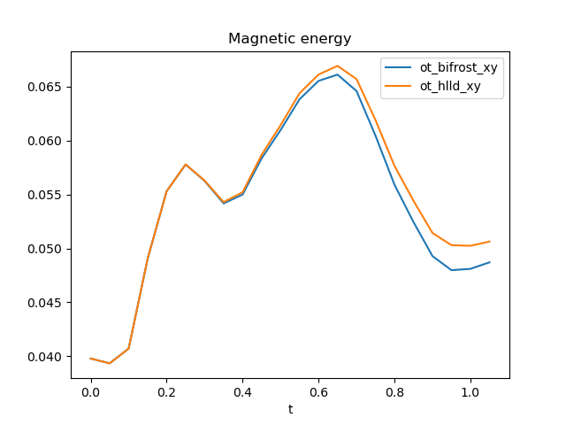 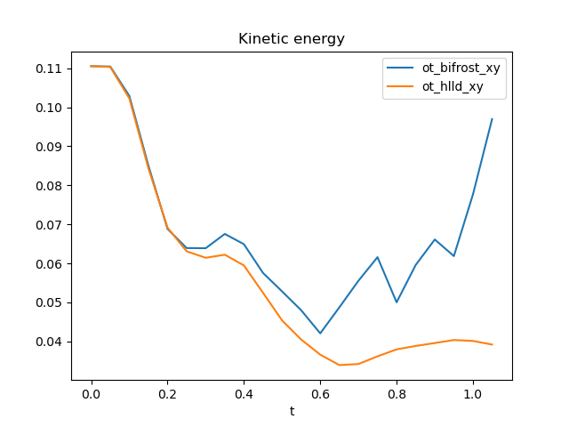 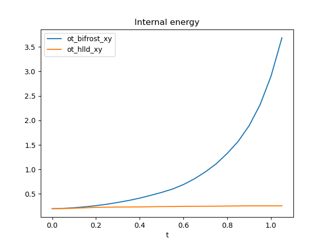 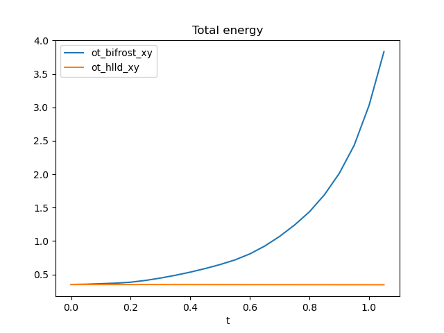 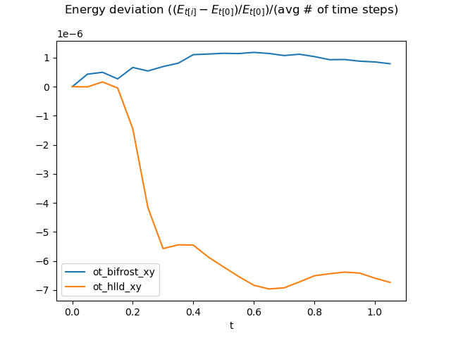 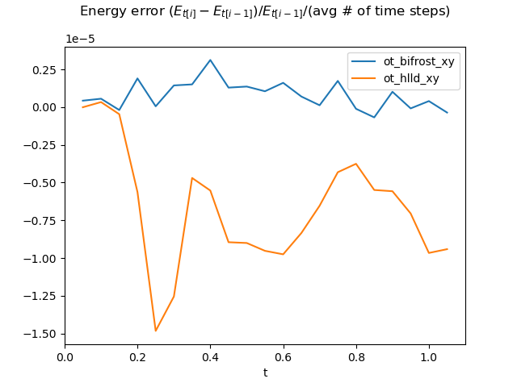